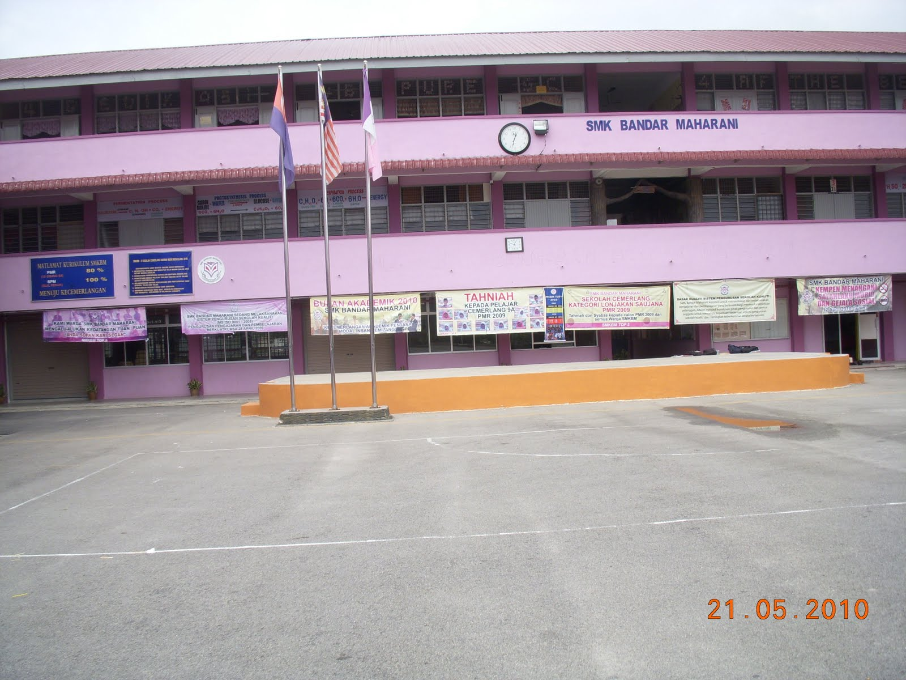

PRIMARY SCHOOL
This is my elementary school from kindergarten to sixth grade. I go to school here because my father is one of the teachers in this school. I really enjoyed my school days here and really miss coming here again. The teachers and friends here are very good. Even if we don't see each other again, I will still remember the moment with them.
SECONDARY SCHOOL

This was my high school from first grade to fifth grade. There are various sweet and bitter experiences that I went through at school. All experiences make me who I am now. However, I am very happy to be one of the former students here. I was a librarian at school. Until now, I still keep in touch with my friends from school.
MY CURRENTLY INSTITUTE

This is my current place of study. I took a diploma in information management. In this course, I was able to learn many things including cataloging, records management, archiving, and information systems. I am not an excellent student, but I will try to achieve my dreams. The new friends I met here gave me a lot of support in this academic field. Hopefully, I can end my diploma days with flying colours.